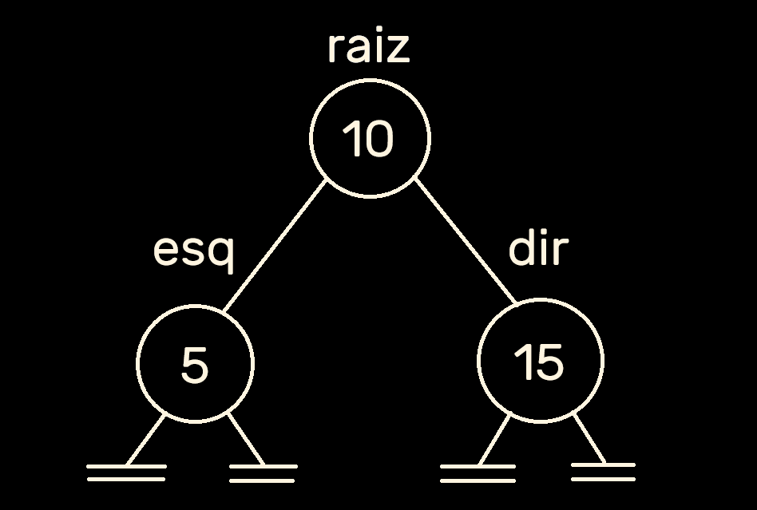

Árvore Binária
As árvores, quando vistas na memória em sua estrutura básica, são bastante similares aos resultados que obtivemos quando tratamos das structs e listas encadeadas, uma vez que vamos apenas adicionar um novo ponteiro e os chamaremos de esquerda e direita, representando os filhos desta árvore, obtendo desta forma os ponteiros esq e dir.
raiz:
Endereço : Bytes
0xff932380 : 0A 00 00 00 84 25 97 ff 94 25 97 ff
// | inteiro | endereço | endereço
// | 10 hex | filho_esq | filho_dir
filho_esq:
Endereço : Bytes
0xff972584 : 05 00 00 00 00 00 00 00 00 00 00 00
// | inteiro | endereço | endereço
// | 5 hex | filho_esq | filho_dir
filho_dir:
Endereço : Bytes
0xff972594 : 0F 00 00 00 00 00 00 00 00 00 00 00
// | inteiro | endereço | endereço
// | 15 hex | filho_esq | filho_dirE desta forma pode-se visualizar a seguinte árvore desenhada:
